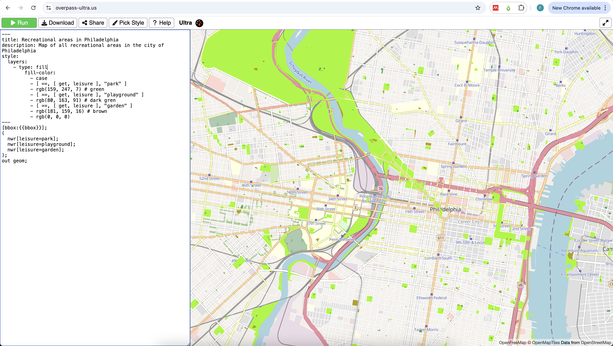
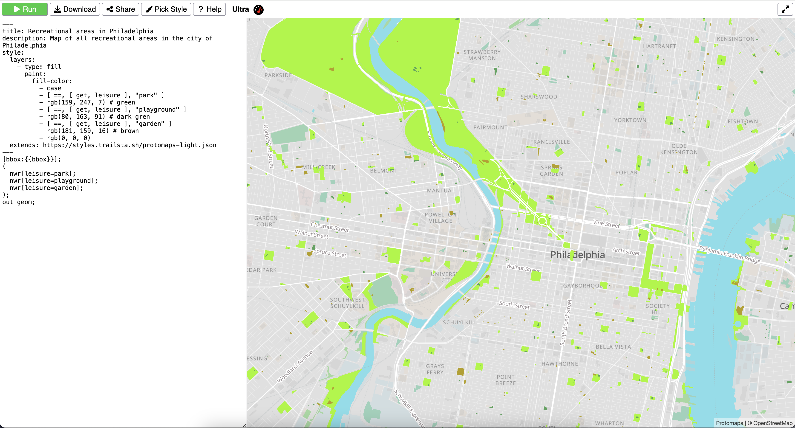
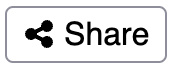
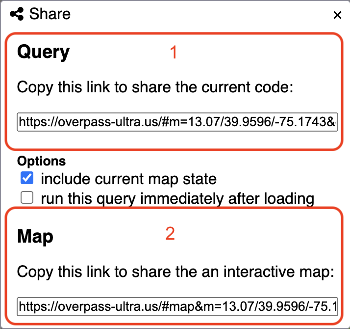

Ultra (Overpass Ultra) Tutorial
Cite this tutorial: Valdez, Felipe. (2025, March 7). Ultra (overpass ultra) Tutorial v1.0. Zenodo. https://doi.org/10.5281/zenodo.17343164
1 What is Ultra?

Ultra (née Overpass Ultra) is a web-application made to simplify making maps with MapLibre GL JS with data from various file/query types such as Overpass, GeoJSON, GPX, and more.
2 What is Overpass?

The Overpass API is a read-only service that lets users retrieve specific OpenStreetMap (OSM) data based on custom queries.
Unlike OSM’s main API, which focuses on editing, Overpass is optimized for data retrieval, handling anything from a few elements to millions in minutes.
Users can filter data by location, object type, tags, and more. Overpass Ultra, a web-based tool, helps with query creation.
Refer to the user manual and Overpass QL guide for details.
Resulting map from this tutorial
3 Building an overpass query
In this step-by-step tutorial we will learn how to create, style and share a map in Ultra.
We will be creating an interactive map of all recreation areas in Philadelphia.
01 Open a new map in Ultra
Go to https://overpass-ultra.us/.
The first time you open the web you will see a default map like this:

02 Type your query
A query is a way to filter and retrieve data from OpenStreetMap. It allows you to search for specific types of map features.
Queries in Ultra follow the strcuture of the Overpass API.
If you are not familiar with OpenStreetMap data, see the info window below:
All data in OSM is represented by an element.
An element can be either a node  , a
, a way  or a
or a relation  .
.
Each element is described using tags which are the combination of a key and a value  .
.
For example, a coffee shop is represented by an element type node with tags amenity=cafe.
Learn more about elements and tags here.
The ‘anatomy’ of a query: Hover over the numbers on the right in the code to reveal what each line on the query does
The following is the default query you see when you open Ultra for the first time:
- 1
-
This is a comment. Everithing inside
/* */will not be considered in teh query. - 2
-
This lines defines a
bboxwhich limits the query to what you are viewing on the map. - 3
-
This line retrieves an element type
waythat has the keyhighwayand valuepath. - 4
-
All single queries within the
()are grouped together. - 5
-
The output format for your query. In this case
geomreturns the actual shape of the features.
For this example we will use the following query.
As there are different types of recreational areas, we will be using a group of three queries with different combinations of value for the key leisure. We will be quering elements tagged: "leisure":"park", "leisure":"playground" and "leisure":"garden". There are more tags that can describe this areas. Explore your own case study in OSM.
Remember to zoom in to your ineterest area. Keep your query area small to retrieve data faster.
- 6
-
We will keep the
[bbox:{{bbox}}];line to filter the query to the map view. - 7
- Here we start our grouped query. As there are different types of areas, we will be using three values.
- 8
-
One way to tag recreational areas is
leisure:"park". Note that we usenwrto get anynode,wayorrelation. - 9
-
Our second query is
leisure:"playground". - 10
-
The third type we are quering is
leisure:"garden". - 11
- We close our query retrieving the geomtery of the elements.
03 Run your query
Copy and paste this query in Ultra’s query window, and then click ‘Run’ 

After some seconds you will see the results display on the map. All results are shown in yellow. In the next steps we will learn how to style the results.
Learn more on how to build a query here
4 Styling in Ultra
In Ultra, you can style the map elements by adding a style: key on a YAML front-matter. This YAML front-matter is a way to add metadata to the query file. All these will be read by Maplibre and Ultra when rendering your resulting map.
01 Add a title and description
The YAML front-matter has to be framed inside ---, just like in the example below.
- 1
- Opening the YAML front-matter text.
- 2
- Title property to be incldued.
- 3
- Description text to be included.
- 4
- Closing line of the YAML front-matter.
Copy and paste (or type) the YAML front-matter with the title and description properties into the Ultra query we created in the previous section.
Paste the YAML front-matter before the query text.

02 Add a custom style
Styling is possible in Ultra within the YAML front-matter. A style is a series of rules on how to visually render a map, what elements are drawn and which colors, icons, sizes, and more to use.
Ultra uses the Maplibre Style Spec. This style is specified by properties.
In this section we describe some of the basic properties needed to create a custom style.
The first step is to add style: to the YAML front-matter. You can tyoe it right after the description: property.
We will assign colors to the polygons we obtained from the query. For that we will add a layer of type fill (polygon) with - type: fill. There are other types of layers you can add: ‘background’, ‘circle’, ‘heatmap’, ‘fill-extrusion’, ‘line’, ‘symbol’. Each serves different purposes and works for specific elements, if it is a point, for example, you might use type:symbol.
Then we specify the property of our layer of type ‘fill’ we want to modify.
We add fill-color: to change the color of our polygons. Each layer type has its own properties that can be modified. See Layes on the Maplibre Style Spec documentation.
03 Add conditionals to assign colors based on the feature properties
Since we want to color each type of recreational area with a different color, we are using - case (line 9) to introduce conditions. We type a conditional statement followed by a specific color for each type of recreational area.
On line 10 of the example code we add [get, leisure] to select the tag leisure from the proeprties. Then we ask for those elements that have "park" as the value for that tag. The == symbol states this.
On line 11, we specify the color we want to assign to the polygons with tag leisure=park. The colors can be specified using the ‘rgb’ (red, green, blue) format. You can use tools like Google Color Picker to know the ‘rgb’ code of a color.
Lines 12 to 15 on the sample code contain the same conditional + color for the other two types of recreational areas: playground and garden.
On line 16 we introduce a fallback color. This color will be assigned to polygons that do not satisfy the conditions in our case. You always need to assign a fallback color in Maplibre Style Spec.
04 Run the query again
Copy and paste the sample code below on your Ultra map and run the query again.
---
title: Recreational areas in Philadelphia
description: Map of all recreational areas in the city of Philadelphia
style:
layers:
- type: fill
paint:
fill-color:
- case
- [ ==, [ get, leisure ], "park" ]
- rgb(159, 247, 7) # green
- [ ==, [ get, leisure ], "playground" ]
- rgb(80, 163, 91) # dark gren
- [ ==, [ get, leisure ], "garden" ]
- rgb(181, 159, 16) # brown
- rgb(0, 0, 0)
---
[bbox:{{bbox}}];
(
nwr[leisure=park];
nwr[leisure=playground];
nwr[leisure=garden];
);
out geom;- 1
- We start the style section with this line.
- 2
-
The most important property is
layerswhich adds something to the map. - 3
-
We define our layer type as
fillas we want the polygons to be painted in the map. - 4
-
There are two main types of properties
paint:andlayout. - 5
-
We define the
fill-colorto be the property we want to modify. - 6
-
The
caseexpression will assign a value to an output of a condition (lines 10 to 15). - 7
-
We search for features that have
parkas the value ofleisure. - 8
- This color is assigned to those features that satisfy the condition established in the previous line.
- 9
-
We do the same evaluation and assignment for thos features with
playground(line 13) andgarden(line 15). - 10
- This is the fallback color. This will be assigned if there are features that do not satisfy any of the previous conditions.

05 Change the background style
Ultra comes with a variety of background styles you can choose. To change the style click on the Pick Style button on the top menu bar and select any style from the list.
{kind=link}
In this example we chose ‘Protomaps Light’ because it uses shadows of grey for most of the elements, highlighting the vibrant greens we chose for the parks.

Notice that an extra line is added to the YAML front-matter with the URL of the background style used. You can chose from anny of the styles in Ultra or use your own from a URL pointing to a JSON file.
5 Adding interactivity to the map
In this section we explore some additional options to customize your resulting map. From an initial center point and zoom, to adding navigation controls and popup windows.
5.1 Adding an initial center point and zoom level
Ultra allows adding some additional options for your map, equivalent to Maplibre Style Spec MapOptions.
Adding an inital center point and zoom is helpful to ensure the map starts in the desired location for the viewer.
To add a center point, simply add the following to your query window, after the description: property and before the style:.
options:
center: [-75.16342, 39.95500]
zoom: 13The values in this example are centered in the city of Philadelphia, PA.
To know the coordinates and zoom level for a different area you can use the Mapbox Location Helper. Zoom to the area you want and copy/paste the values on center(array) and zoom.

5.3 Customizing the popup window
Finally, another useful option to add is a customized popup window. This window will appear when the viewer clicks or hover the mouse over one of the elements from the query.
Here we add a customized popup window that shows the name and leisure type and will appear when one hovers over the polygon.
Paste the code below under the description: property on your query.
popupOnHover: true
popupTemplate: "{{tags.name}} - {{tags.leisure}}"- 1
- This activates the popup on hover. The defualt is when click.
- 2
-
We only add the feature
nameandleisuretype to the popup.
6 Complete query for an interactive map
You can copy and paste the code below on your query window. Remember to zoom in to Philadelphia to have the correct bbox for the map configured here. If you are working on a different area of interest, zoom in to that area and change the center: and zoom: properties on the YAML front-matter before running the query.
---
title: Recreational areas in Philadelphia
description: Map of all recreational areas in the city of Philadelphia
popupOnHover: true
popupTemplate: "{{tags.name}} - {{tags.leisure}}"
options:
center: [-75.17474, 39.95880]
zoom: 13.83
controls:
- type: NavigationControl
position: top-right
- type: GeolocateControl
options:
positionOptions:
enableHighAccuracy: true
trackUserLocation: true
- type: HTMLControl
options:
html: >
<h1><center>Green areas in Philadelphia</center></h1>
css: >
h1 {
position: fixed;
top: 0;
left: 0;
right: 0;
}
style:
layers:
- type: fill
paint:
fill-color:
- case
- [ ==, [ get, leisure ], "park" ]
- rgb(159, 247, 7) # green
- [ ==, [ get, leisure ], "playground" ]
- rgb(80, 163, 91) # dark gren
- [ ==, [ get, leisure ], "garden" ]
- rgb(181, 159, 16) # brown
- rgb(0, 0, 0)
extends: https://styles.trailsta.sh/protomaps-light.json
---
[bbox:{{bbox}}];
(
nwr[leisure=park];
nwr[leisure=playground];
nwr[leisure=garden];
);
out geom;
7 Sharing you Ultra map
The last step is to share your resulting map.
There are mutliple ways you can share it online, as a query or an interactive map.
01 Click on Share
Click on the Share 
02 Select how you want to share
In the new window, select how you want to share the map.

- If you select to share as query, the link will open the map and query with all actions.
- If you select to share as an interactive map, the link will open a mapview only, without the query window on the side.

Attribution
Open Geospatial Data by Felipe Valdez is licensed under CC BY-NC-SA 4.0